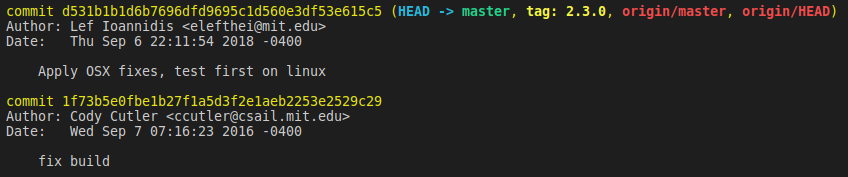

Git管理项目
啥是git
Git is a free and open source distributed version control system designed to handle everything from small to very large projects with speed and efficiency.
我想很多同学之前听说过git这个东西，但基本不会用。git是一种版本控制软件，可以让代码管理和多人协作变得简单方便。这里教大家一些基础的git技能。
在你写代码的时候，有没有这样一种体验？改一个bug或者加一个功能的时候，把原本工整干净的代码弄得乱七八糟，这时你想变回原来的代码，结果发现已经物是人非，再也回不去了。传统的笨方法就是，你在增加新功能之前，把代码文件复制一份新的，然后再对其中一份进行代码的修改，这样做相当笨拙。而git可以完美解决这个问题，为你提供了“后悔药”，可以让你随时穿梭在你代码的不同版本之间。（当然，这只是强大的git的其中一个功能。）下面我们来配置一下git吧。
开始玩一下
（注意！！！这个是学习git用的，请在别处另建一个文件夹，不要在实验框架代码里进行操作！！！）
鉴于我们的实验环境已经由镜像（或自己配置）配好了，git也已经安装好。先通过命令git --version来检查一下版本。出现版本号说明成功安装。
$ git version 2.25.1
然后进行一些基本的配置工作，设置下名字或者邮箱：
$ git config --global user.name "Zhang San" # your name
$ git config --global user.email "zhangsan@foo.com" # your email
这时，我们就可以使用git了。先切换到你开发的项目的根目录（该目录下的所有内容都会被git管理），然后输入：
$ git init
...
$ git add .
...
$ git commit -m 'first commit'
我来解释一下上面三条命令是啥意思：
git init是初始化git仓库，会在该目录下添加一个.git文件夹，这里存放了和git有关的信息，包括你的每一次提交记录，每次提交的代码是什么样的......git add .意思是把该文件夹下的所有内容都添加到当前的git版本里面。那个“点”意思是当前文件夹，你也可以添加单独的文件，比如git add file.txt。git commit -m 'first commit'这个命令的意思是告诉git，把刚刚添加的文件提交到git仓库。其中-m表示要添加一段说明，即first commit。如果你修复了一个bug之后进行一个提交，可以用git commit -m 'fix a bug...'。这个说明的作用就是帮助你分辨代码的不同版本。- 补充：那
git add和git commit有啥区别呢？不都是添加到什么什么git仓库吗？做个类比：你是一个种橘子树的果农，你一箱一箱地采摘橘子装到车里，装满了才能发车。一箱箱装车的过程就是一次次git add的过程；最后发车就是git commit的过程；加个-m相当于给这车橘子贴个标签 “xx年xx月xx日采摘，采摘地点xx” ；车装满可以发车就相当于bug修复好了可以进行commit。
在经过几次commit之后，输入git log，我们会看见类似下面这种，其中记录了每个commit的作者，提交时间，以及你加的那句说明。commit右边那串长长的串是版本号。

这时，如果你想回退到之前的某一个版本，就用git reset指令。以上图为例，我想把代码回退到fix build对应的版本。只需要输入：
$ git reset --hard 1f73b
其中1f73b是我们想要回退的版本的版本号的前几位！（不管几位，只要不和其他版本冲突就行）
以上就是git最最基础的使用，非常建议你在构建代码的过程中使用git，会减少很多不必要的麻烦。如果你害怕你的虚拟机崩掉，.git文件和代码一起丢失的话，也可以尝试远程仓库，把代码放在gitee或github上。
有关git使用的比较全面和通俗的介绍，请查看廖雪峰的教程：Git教程 - 廖雪峰的官方网站 (liaoxuefeng.com)。这里面会教你如何使用远程仓库和其他一些实用的指令。